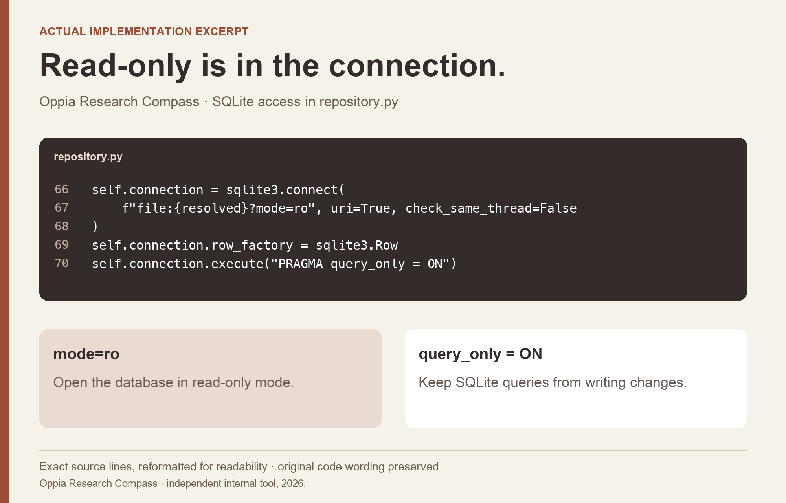

Oppia Research Compass / EVIDENCE RETRIEVAL · RESEARCH OPERATIONS
Make the answer traceable to the evidence.
I built a read-only research tool that helps an AI assistant retrieve historical evidence, keep source references, and recognize when another research question is needed.

THE PROBLEM
What needed to become clearer?
Historical research can become difficult to reuse when the answer is separated from the original evidence. An assistant needs a way to find the relevant material, preserve its source, and show what remains uncertain.
MY CONTRIBUTION
Turn the task into a usable workflow.
I built an Oppia-focused edition of Research Compass around the research archive. It exposes ten read-only tools for finding records and evidence, comparing findings, auditing source coverage, and framing a next study. The AI assistant can use those tools without the tool itself generating a new research narrative.
DECISION 01
Retrieve the relevant work before offering general advice.
The workflow starts with the Oppia research collection. It returns bounded search results with stable record and evidence IDs, then supports fetching the exact evidence. That gives the assistant a concrete source to inspect before quoting or synthesizing it.
DECISION 02
Make the access boundary part of the implementation.
The repository opens SQLite in read-only mode and also enables query_only. Search uses full-text ranking, while the tool surface is annotated read-only. Those choices keep evidence retrieval separate from editing the research archive.

DECISION 03
Let missing evidence remain visible.
The audit checks for missing references, reliance on a single record, and limited evidence types. The research-framing workflow then separates an initial signal from the product decision, evidence gap, and research question. That supports a useful next study instead of treating a retrieved answer as the end of the work.
OUTCOME & REFLECTION
A bounded way to bring research into AI-assisted work.
The internal 0.4.0 package provides ten read-only tools, with a recorded automated integration-test report covering retrieval, tool boundaries, and reference checks. It gives the host assistant an inspectable path from a question back to the research source.
Traceability is a product behavior. It depends on what the tool returns, what it asks the assistant to inspect, and how clearly it represents a gap in the evidence.
The next question I would test
I would evaluate representative researcher tasks: finding a relevant study, checking a quotation, and identifying an unsupported conclusion. I would compare source accuracy and review effort before making an adoption or productivity claim.
Original repository implementation and September 4, 2026 internal package records. This independent project is separate from my volunteer role at Oppia. Visuals show implementation and reconstructed workflows; the research corpus remains private. Team adoption and measured productivity were not established.